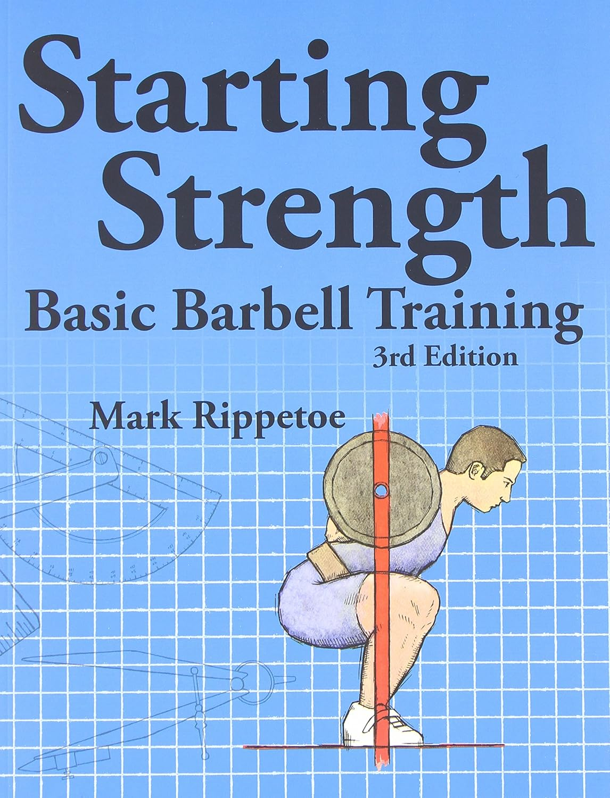

I want to start off by telling you the harsh reality, that no one give a fuck about you and it is especially true in the gym. You might think that the guy who bench 3 plates would laugh at you when you are dying benching the bar since he has been staring at you for the past 3 minutes. Truth is, he might have been zoomed out and was just staring into the void, or he was just making sure that you won't die under the bar. So many has been frightened by the idea of going to a gym because they have no clue where to start and don't want to look like a dumbass. I have been there, and still, till this day, look like a dumbass sometimes when trying out new movements or machines. Just know that it is part of the process, embrace it! But I am here to guide you so you have a general idea on what to do.
The upper day is meant to help you get familar with someone the most straightforward machines in the gym. 3x12 is the set and reps you must follow. Of course you can alternate different movement however you want but you should make sure that you hit each upper body muscle at least once. I did not include that starting weight because that is something you have to figure out yourself. I would suggest starting with a weight that you can do 15-20 reps with and then slowly increase the weight until you can only do 12 reps. Make sure you incorporate linear progression, which means you should increase the weight every week. If you can do 12 reps for 3 sets, increase the weight by 5-10 pounds next week. Or you can increase reps by 1-2 every week until you can do 15 reps and then increase the weight.
For lower day every movement follows the same principal as explained under upper day, if you are an individual who is over weight then adding 10 minutes of brisk walking before or after workout can be great. However, don't try to force it, and listen to your body. If you are too sore or tired then just call it a day.
If you have done the beginner routine for some time and have gained some basic strength, then its time for you to try the novice routine. The novice routine would probably take a while to learn since compound movements are complex and I recommend you to spend a lot of time on perfecting form before adding subsential weight on the bar. It's always good to have a gym buddy who can critique your form, or you can get yourself a tripod to record each session and reflect on your forms. When I started this program, it took me a couple of months before I can finally get the forms right, and even till this day I still have some form issue to correct, don't worry, most lifters including myself will have some form issues, as long as your form is mostly correct and your form won't result in major injuries, then you can proceed with the linear progression. If you felt something is off during or after your gym session don't try to push them. Pause the progression, deload a bit and work on form first. Remember, it might only take you a week or two to get back on track, but it would takes months to heal and recover from an injury.
Starting Strength follows a very basic yet efficient workout split, you will train 3 times a week. You will do squats and deadlifts every workout, however, for bench press and overhead press you can alternate. For example, for week one you can do bench, overhead press, and bench again. Week 2 you can do overhead press, bench, and overhead press again. You should be able to do this split for quite some time, it can get boring but the benefit is definitely worth it. You can move onto the next phase when your lifts begin to suffer and you feel fatigued all the time. When that happen, you can move onto the next phase, I will not go into much details here since personally I have never really reached the end phase, which I will elaborate the reasons later. If you are interested feel free to buy the Starting Strength book, I have the book myself and it has helped me a lot regarding the program itself and why compound movements are so effective. The link will be down below.
 Starting Strength amazon linkI have ran this program multiple times, due to injuries, getting lazy, etc. I have gained quite some strength from the program. I have recommended this program to all of my friends who wants to get serious on lifting. However, none really dedicated fully towards this program since it is very hard to lift heavy weight and there are mental blocks. It has bothered me quite some time too. The program does a very specific squat form called the low bar squat, and it has even it's own unique way to do low bar squat. I would recommend you to try both the low bar squat and the high bar squat to see which one you like the most. With low bar squats, you tend to move more weights as it involves more leg muscle compared to standard high bar squat. If you can do low bar squat I would definitely recommend it but if not high bar squat is fine. My biggest suggestion would be to not push yourself too much when you body is giving up. Know the difference between mental blockage or physical. If you are lazy and don't want to push the weight, then you should force yourself to do it, but if you feel like shit, extremely tired and everything hurts then I recommend taking a step back, maybe take a day or two off and come back when you are recovered.
So when do you know you should switch to a new program? This usually will happen after a year doing Starting Strength, again, you should go through the full potential of Starting Strength before you move on, but if you got tired or just wanted to change things up a bit. Below is a program that I have ran for sometime and see benefits
PHUL programI would recommend you to modify the program to your needs, as Starting Strength tends to lack the minor muscle areas such as bi/tricep, back muscle etc, it's good to modify the PHUL program to suit your needs. You will typically run this program 4 times a week.